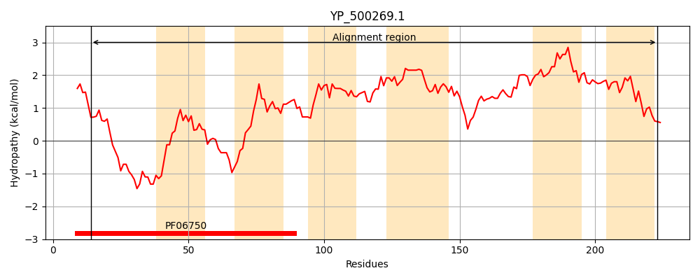
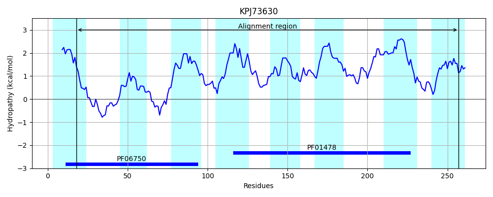
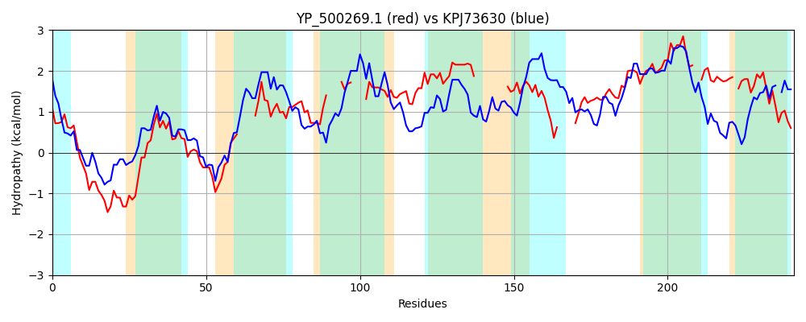

Hit Accession: KPJ73630
Hit TCID: 9.B.252.3.6
Hit Description: gnl|BL_ORD_ID|6027 gnl|TC-DB|KPJ73630.1|9.B.252.3.6 hypothetical protein AMJ48_00120 [Parcubacteria bacterium DG_74_1]
Mach Len: 241
e:0.000000
Query TMS Count : 6
Hit TMS Count: 8
TMS-Overlap Score: 3.750000
Predicted Substrates:None
BLAST Alignment:
Score: 208 , Bit scores: 84 bits, E-value: 1.1e-19, Alignment length: 241, Percentage identity: 29
Query: 14 SFLYQFISIEETSFDYLHRRSKCDYCNSSLKWYELMPIISFLLLKGRCRNCRKRISLTHFL-----GETFALIPIVFIKYDFTYVNATLF----ITTY----VFLLIFTMTDITSLMLDCRLIIIYCIVSLSLSMIYP----------VAFIIISMTTHIFYFLF-----RAYIGYGDVLLISALSLFFPLQFTIYVILFTFVIAGLVA--LITMIFKPIKL-LPLVPFIFISFFINSLFY 223
SFL I ET +L RS C YC L W +L+P++SF +L+G+CR C+K IS + L G F LI FI D N T+F + Y FL+I + D+ ++ +++ +++ ++ Y + F+ + F+ LF A++G GDV L+ + L + TF+I ++ LI + K +K +PL PF+ FI +LF+
Sbjct: 18 SFLNCVIYRLETDQSFLRGRSLCPYCRHILSWQDLIPLLSFFILRGKCRYCQKSISFQYPLVEMATGLLFLLIFNFFIPLDMKLSNGTIFNFLDLIYYWIISCFLIIIFVYDLKHYIIPDKVVSPAIVITFLYNIFYSLFVVHNSKFLIQFLFSAFGAAAFFLLFILISRGAWMGGGDVKLVFLMGLVLGWPNIFVALFLTFLIGAIIGVDLILLGKKTLKSEIPLGPFLVFGTFI-ALFW 257 | Protein Hydropathy Plots: |
|---|
|  |  |
Pairwise Alignment-Hydropathy Plot:
|
|---|
|  |